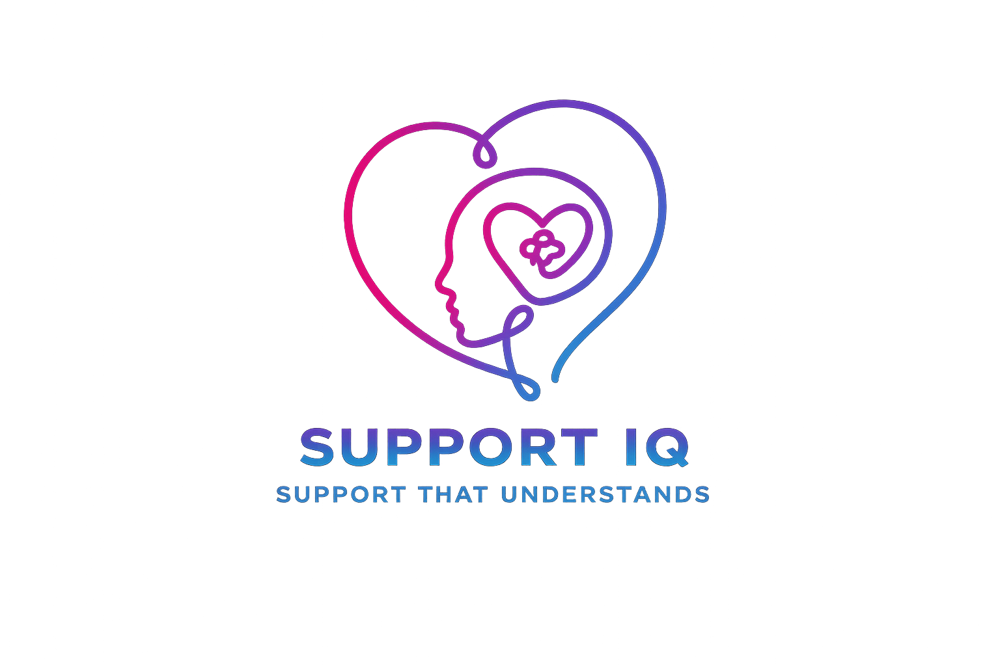
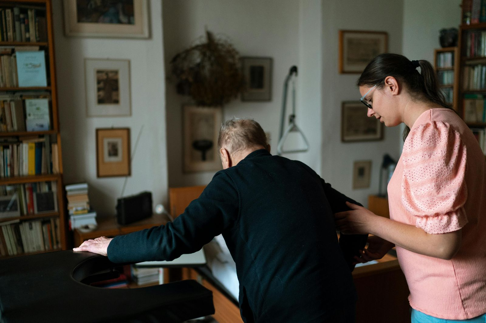
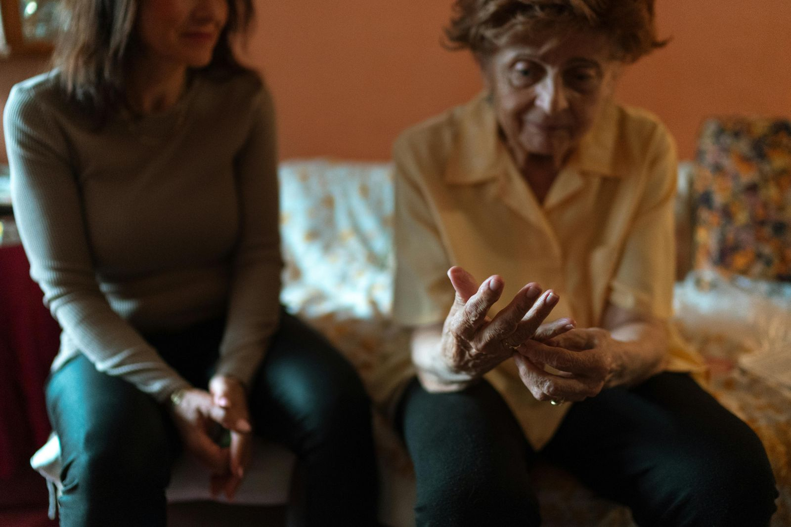

Supported living
Support shaped around confidence, routine and greater independence at home.
SupportIQ
SupportIQ delivers home care, supported living and complex healthcare with warmth, structure and a clear understanding of what quality support should feel like in everyday life.


Built Around People
Good home care should feel calm, well-matched and genuinely responsive. SupportIQ is shaped around real lives, real routines and the people who need dependable support delivered with respect.
Care that feels thoughtful rather than rushed.
Experienced support for both everyday needs and more complex situations.
Clear communication with individuals, families and professionals.
Services

Support That Understands, whether the need is practical, specialist or long-term.
Support shaped around confidence, routine and greater independence at home.
Calm, capable support where needs are more involved and consistency matters most.
Person-led care built around communication, trust and an understanding of individuality.
Flexible day-to-day support that adapts to routines, goals and changing needs.
What It Feels Like

SupportIQ values reassurance, patience and the kind of consistency that helps trust grow naturally.
Whether support is simple or specialist, the focus stays on what works best for the individual.
The Team Behind SupportIQ
SupportIQ is built around experienced care thinking, dependable coordination and a genuine commitment to delivering support properly.
Thoughtful matching that looks beyond a task list.
Confidence across supported living, complex needs and long-term support.
A professional service that never loses the human touch.
Start A Conversation